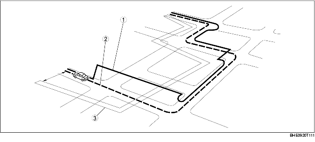

• This function compares the route shape the vehicle is travelling to map data using the GPS satellite signals, and corrects the vehicle's position to the most appropriate road on the map data.

.
1
Map-matched route
2
Actual indicated route
3
Estimated route based on self-contained navigation